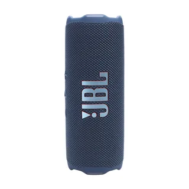
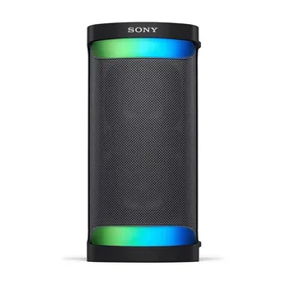

The short answer
Decide where the speaker will live most of the time, then buy the smallest one that is loud enough for that place. Check three things on the box before the brand: the water rating, the real battery life in hours, and whether it charges over USB-C.
Carrying a lotChoose a palm-sized speaker and accept thinner bass.
Mostly at home or a gardenChoose a mid-size speaker with a handle and a bigger battery.
PartiesChoose a large speaker, or two mid-size ones paired together.
A portable Bluetooth speaker is a simple idea. It plays music from your phone without a cable and it has a battery, so you can move it from the kitchen to the balcony to a friend's house. The difficulty is that the shelf is full of speakers that look alike and quote numbers that cannot be compared with each other. A "40 watt" speaker from one maker can be quieter than a "20 watt" speaker from another, because the number says what the amplifier can draw, not how loud the sound is in a room.
So we will skip the watt numbers and talk about what you will actually notice: how big it is in your bag, how it sounds outdoors, how long it plays before you have to hunt for a charger, and whether it survives a splash of tea or a sandy beach. Along the way we point out where the extra money buys something real and where it only buys a nicer box.
A note on prices: every price we mention is a rough range in US dollars. Prices change quickly and are different in each country, so use them to compare tiers, not as a quote. Specific models change every year or two, which is why we describe types of speakers and the features to look for rather than telling you to buy one named product.
Pick a size first
Size decides almost everything else. It sets how loud the speaker can get, how deep the bass goes, how long the battery lasts and whether you will actually carry it with you. A speaker that is too big stays at home. A speaker that is too small disappoints the first time you try to fill a garden with it.
Portable speakers fall roughly into three groups. The weights and battery times below are typical ranges, not promises, and they overlap at the edges.
| Class | Typical weight | Typical battery | Best for | Weak spot |
|---|---|---|---|---|
| Palm-sized (about the size of a soda can or smaller) | 200 to 600 g | 8 to 16 hours | Backpacks, desks, bikes, hotel rooms | Little bass, limited volume outdoors |
| Mid-size (about the size of a water bottle or a bit bigger) | 0.6 to 1.5 kg | 12 to 24 hours | Gardens, kitchens, small groups, picnics | Too big for a small bag |
| Large party speaker | 3 kg and up | 10 to 25 hours | Big gatherings, outdoor parties | Heavy, often needs two hands, costs more |
If you are unsure, the mid-size class is the safe middle. It is small enough to throw in a tote bag and big enough that people notice it is on without you turning it all the way up. Palm-sized speakers are lovely, but plenty of owners find that a small speaker played at full volume sounds strained, while a mid-size one at half volume sounds relaxed.


What good sound means in a small speaker
Physics limits small speakers. Low notes need a lot of air to be moved, and a small box cannot move much air. Makers get around this with a few tricks, and it helps to know what they are so the marketing does not fool you.
Drivers and passive radiators
A driver is the moving part that makes sound. Most portable speakers have one or two main drivers for the middle and high notes. Many also use a passive radiator, which is a flat membrane with no wire attached. It moves because the air inside the box pushes it, and it helps the bass sound deeper than the box size would suggest. When you see two small drivers plus two passive radiators, that is a sensible design for a mid-size speaker. When you see a tiny speaker advertising "powerful bass," treat it with caution. It may sound fuller than a phone speaker, but it will not shake a table.
Loudness outdoors
Outside there are no walls to bounce sound back at you, so a speaker that sounds loud in a living room can sound weak in a park. As a rough rule, to make a sound seem twice as loud, you need about ten times the power. That is why a bigger speaker is not just a little louder. It is in a different league outdoors. If you plan to use it on a beach or in a yard, go one size up from what you think you need.
Distortion at high volume
Cheaper speakers often sound fine at 50 percent and ugly at 90 percent. The bass turns muddy, voices get harsh, and the speaker may even cut the bass on purpose to protect itself. When you test a speaker in a shop, play something with a clear voice and a steady bass line, turn it up to the level you would use, and listen for rattling or the sound pumping in and out. A good speaker keeps its manners as you raise the volume.
Voices and calls
Almost every portable speaker includes a microphone for calls. It is fine for a short chat, but the sound is usually thin and echoes in a room. Do not buy a portable speaker as a meeting speakerphone unless the maker specifically sells it that way.
Tuning and EQ
Some speakers have a companion app with an equalizer. This is useful if you listen to a lot of spoken audio and want to lift the middle, or if you find the bass boomy in small rooms. It is not a reason to buy a speaker on its own, though. A speaker that sounds good out of the box matters more than one you have to adjust.
Sound is personal. Some people love big, warm bass and others want clear vocals. If you can, listen in a shop with a song you know well, and trust your ears over any chart.
Battery life in real life
The battery number on the box is measured under friendly conditions: moderate volume, usually around half, with no lights and nothing else running. At the volume you use outdoors, expect less. A speaker advertised at 20 hours might give you 10 to 12 when you push it. That is still fine, but it is worth knowing before a long day at the lake.
What changes the number
- Volume. This is the biggest factor. Loud playback drains the battery several times faster than quiet playback.
- Bass-heavy music. Deep bass asks the amplifier for more power.
- Lights and effects. A glowing ring or party lights look nice but can cost a couple of hours.
- Temperature. Cold weather shortens the battery life noticeably, and a hot car harms the battery over time.
- Pairing two speakers. The speakers that link together may use more power.
Charging
USB-C charging is the one convenience that is easy to overlook. If your phone, tablet and laptop already use USB-C, you can charge the speaker with a cable you already carry. Older speakers with a micro-USB port or a round barrel plug mean one more cable to lose. Also check how long a full charge takes. Three to four hours is normal, and a speaker that takes eight is a nuisance if you forgot to charge it the night before.
Some larger speakers can also act as a power bank, with a USB port that charges your phone. It is a nice extra on a camping trip, but it drains the speaker quickly, so treat it as an emergency feature.
How long the battery itself lasts
Every speaker has a rechargeable lithium-ion battery. After a few hundred full charge cycles it holds noticeably less than when it was new, often around 80 percent of the original after a few years of regular use. Most speakers do not have a battery you can swap, so a speaker you use every day will age faster than one that sits in a drawer most of the week. If you keep a speaker plugged in all the time, you are wearing the battery without gaining anything. Unplug it once it is full when you can.
Water and dust ratings, explained
Outdoor use is the reason most people buy a portable speaker, so this section matters. Ratings look like "IP67" or "IPX7." They are standard codes, and once you know the pattern they are easy to read.
The first digit after "IP" is protection from dust and solid objects, from 0 to 6. The second digit is protection from water, from 0 to 9. If a maker writes an X in place of a number, that part was simply not tested or rated. So IPX7 means "rated for water, not rated for dust," and IP67 means "fully dust-tight and rated for water."
| Rating | What it means in plain terms | Good for |
|---|---|---|
| IPX4 | Survives splashes from any direction | Kitchen, desk, light rain |
| IPX5 or IPX6 | Survives jets of water, such as a hose or heavy rain | Garden, patio, bike rides |
| IPX7 | Survives being dropped in water up to about 1 metre for up to 30 minutes | Poolside, shower, boat |
| IP67 | Same water rating as IPX7, plus sealed against dust | Beach, sandy trails, dusty sites |
| IP68 | Dust-tight, and water-proof to a depth the maker states | Heavy outdoor use |
Three points are worth remembering. First, the tests are done in fresh water in a lab. Salt water, chlorine and soapy water are harder on the seals, so rinse the speaker with clean water after a day at the sea or a pool, and let it dry before charging. Second, make sure the charging port cover is shut. Most water damage in speakers comes from a flap that was left open. Third, a water rating does not mean the speaker floats. Some do, and the maker will say so clearly. If you want to use it in a boat or a pool, a floating model is easy to rescue.
A dust rating matters more than people expect. Fine sand gets into buttons, ports and the speaker grille, and a speaker without a dust rating can end up crunchy after one beach day. If sand is part of your plan, look for the "6" in the first position.
Bluetooth, codecs and range
Bluetooth is just the wireless link between your phone and the speaker. You do not need to understand the technology, but a few terms appear on every box.
Bluetooth version
Newer versions, such as Bluetooth 5.0 and above, connect more reliably and use less power than the old 4.x versions. For a speaker bought today this is nearly standard, so it should not be what decides your purchase. Just avoid speakers that still list a very old version.
Codecs
A codec is the method used to squeeze the music before it is sent over the air. The basic one, called SBC, works with everything. Apple devices also use AAC, and some Android phones support other options like aptX. In a small speaker used outdoors, the difference between these is very hard to hear. The speaker itself, the room and the background noise matter far more. Do not pay extra for codec support unless you are using good headphones too and care about it.
Range
Plan on about 10 metres in an open space. Walls, doors and even your body can shorten that. If you leave your phone in the kitchen and walk to the garden, the music may stutter. This is normal, and a newer Bluetooth version helps only a little.
Delay with video
Bluetooth adds a small delay between picture and sound. Music does not care, but if you watch videos through a speaker, the voices may lag behind the mouths. Many phones and streaming apps correct for it, but some do not. If you mainly want sound for a TV, a soundbar or wired speaker is a better choice. We cover that on our soundbar page.
Multipoint
Some speakers can stay connected to two devices at once, for example your phone and a tablet. It is handy at a shared house or in an office, but not essential. A speaker that connects fast to the last device it used is more useful than one with fancy options and a slow handshake.
Stereo and party pairing
Many makers let you link two speakers of the same model. There are two common ways to do it.
- Stereo pairing. One speaker plays the left channel and the other plays the right. The sound is wider and more natural, and it is a good way to turn two mid-size speakers into a small home system.
- Party mode. Both speakers play the same sound, or you can link a bunch of them. This is about filling a bigger space with sound rather than about quality.
The catch is that most of these features only work between speakers from the same brand, and often only within the same product family. If you plan to add a second speaker later, check that the first one can pair with the model you intend to buy, and keep in mind that the model you want might be discontinued in a year. A newer open standard called Auracast is starting to appear on recent devices and lets speakers from different makers join one broadcast, but support is still patchy, so check the box rather than assume.
Two smaller speakers in stereo can sound better than one big speaker at a similar price, especially in a living room, but a single big speaker is simpler and often louder in a park. Decide whether you want sound that is wide and pleasant or simply loud.
Where you will use it
It helps to picture the three or four places where you will really play music and choose around those.
Beach, lake or pool
Look for IP67 or better, a loop or strap for hanging, a rubber body that tolerates knocks, and a colour that is easy to spot on a towel. A floating model is a plus. Sand and salt are the enemies, so plan to rinse it. A mid-size speaker is ideal here, because wind and waves swallow small speakers.
Kitchen and home
A splash-resistant speaker, IPX4 or better, is plenty. Stability matters more than ruggedness, so look for a flat base that does not tip when you lean on the counter. You can plug it in while you cook, so battery life is less critical. Sound quality counts for more here than toughness.
Bike or backpack
Weight and a solid mounting point decide it. A palm-sized speaker with a carabiner loop and an IP rating that handles rain is right. On a bike, remember road noise and wind, which are louder than people expect, and keep volume at a level that still lets you hear traffic.
Garden and patio
Choose mid-size or larger, with a strong IPX5 or IPX6 rating for sudden rain. If you will leave it outside, bring it in at night, because dew and temperature swings are tough on electronics.
Camping and hostels
A long battery and a rugged shell matter most, and a power bank function can be useful. Be considerate of other people nearby. Sound travels a long way in the quiet outdoors, and a small speaker at moderate volume is more than enough for a group around a fire.
Travel
Check the size of the box, because a speaker that fits your hand luggage with room to spare is more likely to be packed. Lithium batteries are allowed in cabin luggage, but airlines can have rules about large capacities, so check your airline for bigger models.
Features worth paying for, and ones that are not
Worth it
- USB-C charging. Fewer cables and faster top-ups.
- A real water and dust rating. Not just "splash proof."
- Physical buttons. Play, pause, volume and Bluetooth should work without opening an app, ideally even with wet fingers.
- A battery indicator you can read. A few lights on the speaker are enough, and an app is a bonus.
- A strap, loop or handle. You will use it more than you expect.
- Software updates. Some brands fix bugs and improve connection over time through an app.
Nice, but optional
- Light effects. Fun at night, but they use battery.
- Voice assistants. Handy at home, rarely used outdoors, and some depend on Wi-Fi.
- A line-in socket. Useful for a wired source such as a turntable or a laptop, but most people never use it.
- Waterproof speakerphone claims. Fine for a quick call, but not a substitute for a headset.
Often not worth it
- "Huge bass" labels on tiny speakers. The box size caps what is possible.
- Premium codec badges. You will rarely hear the difference outdoors.
- Peak watt numbers. They do not describe loudness.
What each price tier gives you
These are rough ranges in US dollars, and they vary by country and by sale season.
| Tier | Rough price | What you usually get | What you usually give up |
|---|---|---|---|
| Budget | Under $40 | Basic sound, decent battery, simple splash resistance | Bass, a clear water rating, long-term support, sometimes a clean sound at high volume |
| Middle | $50 to $130 | Good sound for the size, IP67 on many models, USB-C, app support, stereo pairing | The deepest bass and the loudest party volume |
| Premium | $150 to $300 | Fuller sound, better build, longer support, features like power bank and fancier tuning | Portability, and you pay for the brand name |
| Large party | $250 and up | Real volume and bass for big gatherings | It is heavy, and you will leave it at home most days |
For most people the middle tier is where value is best. Below it, rating claims and sound quality get vague. Above it, you are often paying for tuning, finish and brand more than for something you will notice at a picnic. If you can find a good speaker from the previous generation on sale, that is usually the best value of all, because speakers change slowly from one year to the next.
Common mistakes
Buying the smallest one because it is cute
A speaker that is too small leaves you turning it to the maximum, and maximum is where it sounds worst. Match the size to the loudest place you will use it, not to the quietest.
Trusting "waterproof" without a code
If the box says waterproof and there is no IP code anywhere, ask for the code. A real rating has a number. Vague words are marketing.
Ignoring the charging port cover
A rating only holds when the flap is shut. A flap that does not click firmly closed is a warning sign.
Leaving it in a hot car
Heat is the fastest way to wear out the battery, and it can warp the speaker glue and the fabric. Take it with you.
Playing at full volume for hours
It drains the battery, stresses the speaker and, if you are close to it, is hard on your ears. If it only sounds good at the top of the dial, the speaker is too small for the job.
Expecting it to replace a home system
A portable speaker is a clever compromise. It is not designed to match a pair of proper bookshelf speakers in a living room. If most of your listening is at home, our audio guide covers other options.
Buying a model that cannot pair with the next one
If stereo or party pairing matters to you, buy within a family that supports it, and ask the shop whether the line is still being made.
Making it last
- Rinse it with fresh water after salt, chlorine or sand, with the port closed, then let it dry fully.
- Store it somewhere cool and dry. Avoid direct sun on a dashboard or a window sill.
- Keep the battery between roughly 20 and 80 percent when it will sit unused for weeks, and top it up every month or two.
- Do not charge it while it is wet. Wait until the port is dry.
- Update the firmware through the app when the brand offers it. It often fixes dropped connections.
- Wipe the grille with a soft brush or a damp cloth. Do not use compressed air or strong cleaners on it.
- If the speaker starts acting strange, restart it and forget the pairing on your phone before you decide it is broken.
A well-treated speaker from the middle tier commonly lasts four or five years before the battery starts to bother you. A speaker with a bad habit, such as sitting at 0 percent for months, can lose a lot of capacity in a single year.
Questions people ask
How loud does a portable speaker need to be?
For a desk or a hotel room almost anything works. For a garden or a small group outdoors, aim for a mid-size speaker. For a crowd, go large or pair two. Remember that outdoors needs more power than indoors.
Is a more expensive speaker always better?
No. Price rises faster than quality once you pass the middle tier. Extra money often buys a nicer finish, a brand name and fancy extras. Spend more if you need a larger size or a sturdier build, not just a bigger logo.
Can I use my speaker in the shower?
If it has an IPX5 rating or better, yes, but keep it out of direct hot water jets and away from soap, which can wear the seals over time. Most people place it on a shelf away from the spray.
Do I need Wi-Fi in a portable speaker?
Not for a speaker you take outside. Bluetooth is enough. Wi-Fi models stream music at home and may offer better sound, but they usually need a network and are made for the house, not the beach.
Why does my speaker disconnect or stutter?
Distance, walls, other wireless devices and a low battery are the usual causes. Move closer, remove the speaker from the phone's saved list and pair again, and update the firmware if there is an update.
Can I charge my phone with the speaker?
Only if the speaker has a power bank function and a USB output. Check the box for it, and use it for emergencies, because it empties the speaker quickly.
How long does a speaker battery last before it wears out?
With regular use, many speakers feel noticeably weaker after three to five years, because the battery loses capacity. Most batteries cannot be replaced easily, so it is worth buying from a brand with a decent repair or support record.
Should I buy used or refurbished?
It can be a good deal, but the battery and the water seals wear with use, and you cannot see either. Ask for the return terms and test it for a couple of days, with a full charge and a loud play, before the return window closes.
A quick checklist before you buy
- Where will I use it most? Choose the size for that place.
- Is there an IP code, and does it match my plans for water and sand?
- Does the real battery life match my longest day?
- Does it charge over USB-C?
- Does it sound clean at the volume I will use?
- If I want a second speaker later, can they pair?
- Is the return policy good enough to test it properly?
If you can answer these seven questions, you already know more than the box tells you. For more help with choosing between products in general, see our guide to choosing. If you want to know how we write these pages and where our information comes from, read our methodology. We do not claim to have lab-tested every speaker, and we say so on that page.
Specifications and prices change often. Check the maker's page for the exact model sold in your country before you buy.